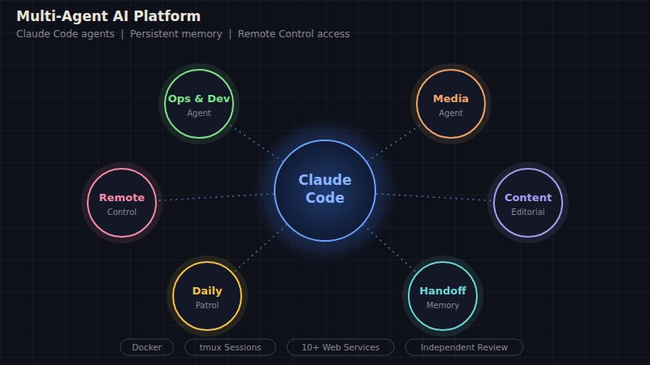
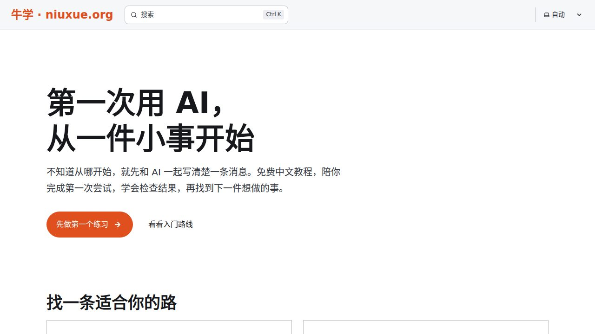
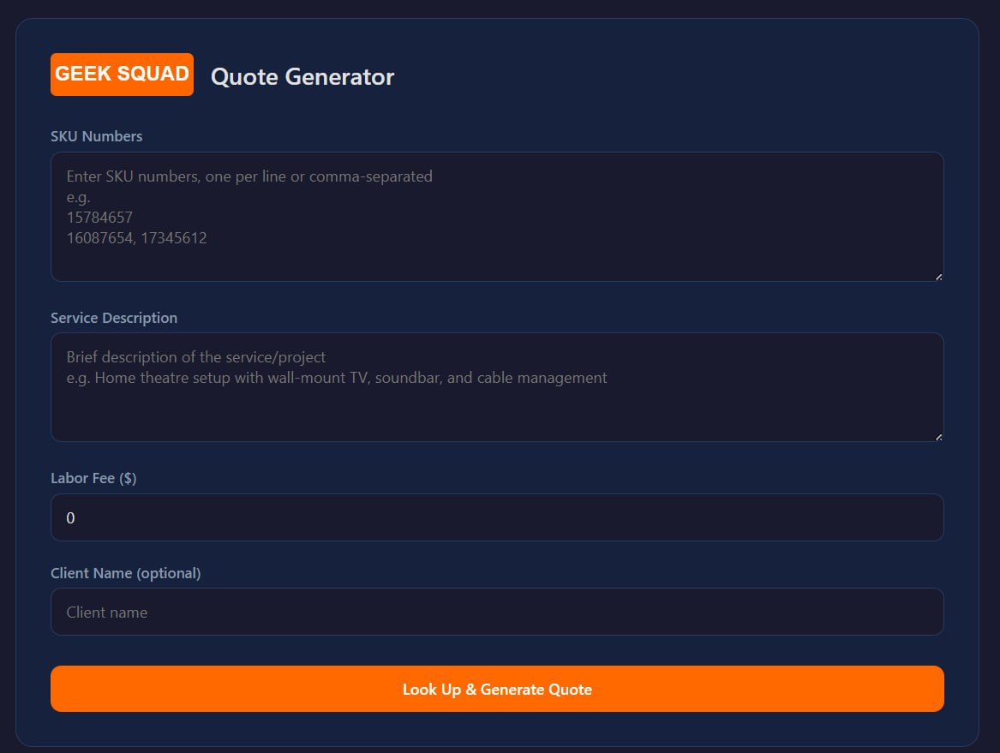
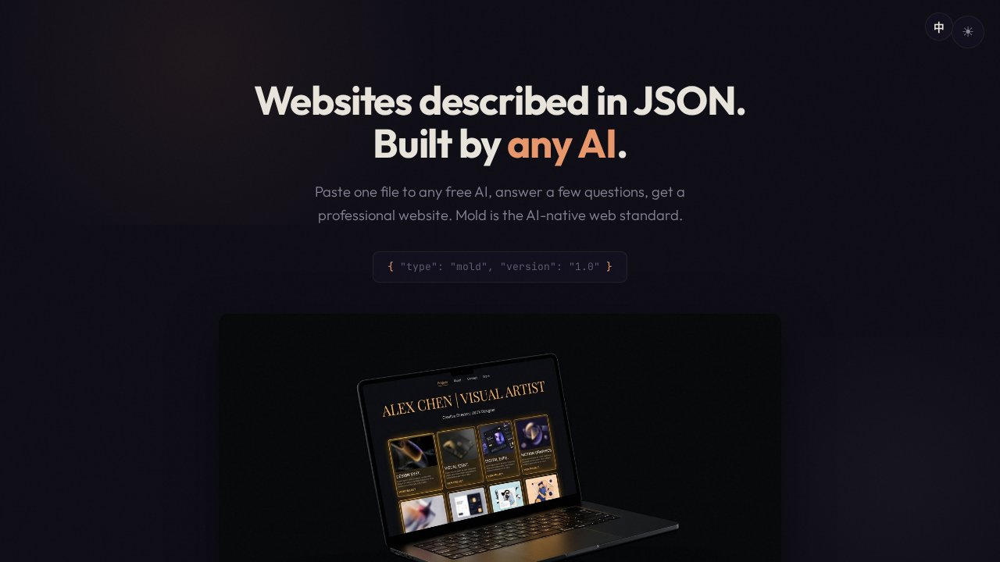
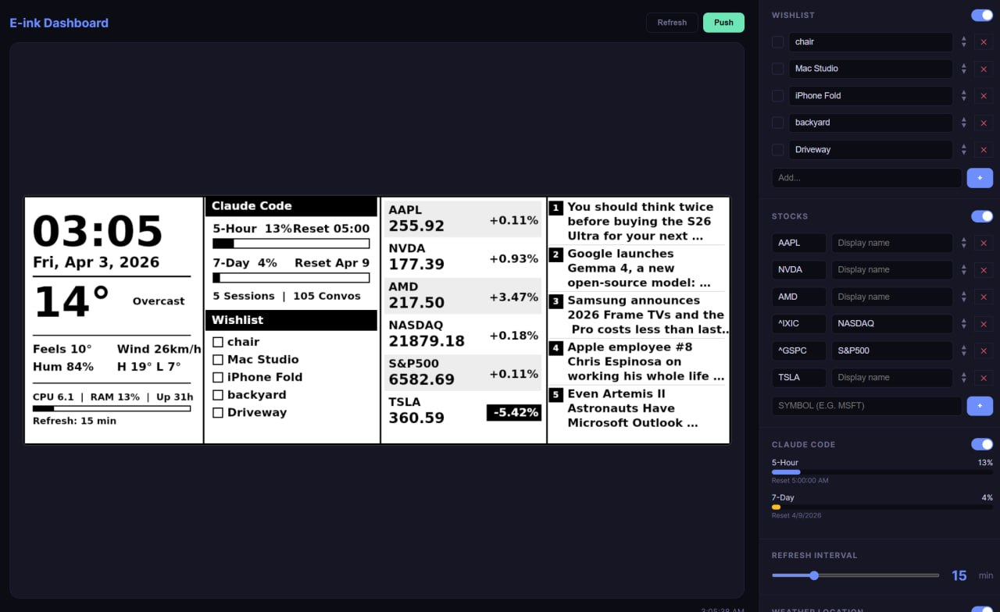
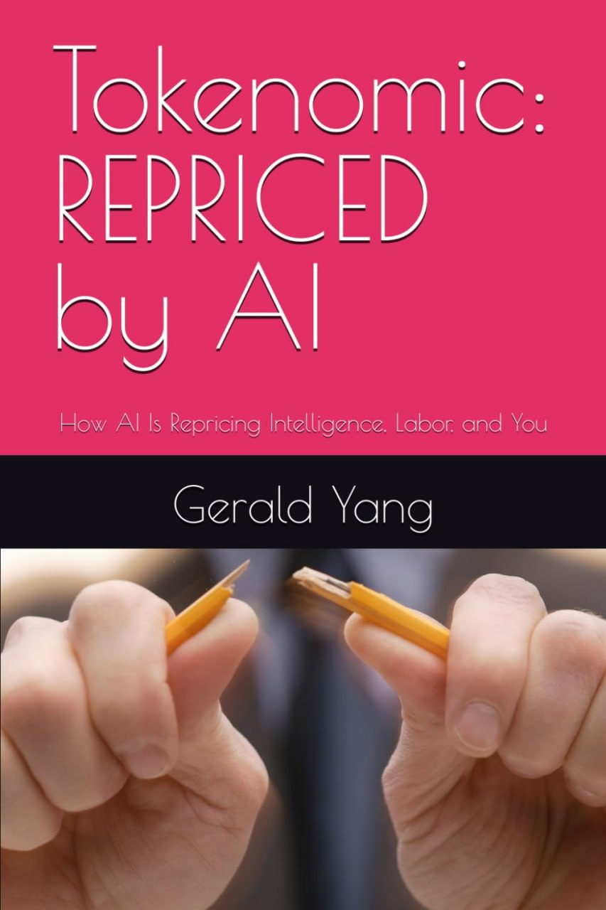

Problem: Commercial AI tools are stateless and generic. Solution: Specialized AI agents with persistent memory, subagent dispatch, scheduled self-checks, and remote access through Claude Remote Control, plus custom MCP servers, Skills, and Plugins for orchestration. Result: Running 24/7 since March 2026 on a self-hosted NAS alongside 10+ web services. Daily automated patrols and handoff notes keep work from getting lost across restarts.
How it was built →
Problem: Chinese beginners pay for low-quality AI courses, and free tutorials go stale within weeks. Solution: A free Chinese learning site that goes from a first AI chat and Chinese AI assistants to Claude Code, agents, and real case studies. Result: 70 guides live. In September 2026, a 37-agent audit reviewed the whole site and flagged 529 issues; fixes shipped through a pipeline where every change is independently reviewed.
Live →
Customer service quote system designed and led at Best Buy Canada Geek Squad. Officially adopted and deployed to production at the department level — rolled out to ~200+ Field Agents. Standardized a critical workflow with measurable efficiency gains. (Internal data under NDA; sanitized demo available on request after an initial conversation.)

Problem: AI editing HTML burns 3,500 tokens per change — expensive, error-prone, scales poorly. Solution: A 14-API protocol that lets any LLM manipulate web pages structurally via JSON, not strings. Result: 97% token reduction, 100% pass rate across Claude / GPT-5 / Gemini / Grok / ChatGPT, and 13 differentiated AI crawler strategies.
Live →Problem: 7+ services scattered across different ports with no central access point. Solution: Unified web portal with health monitoring, Cloudflare Tunnel routing, and document preview. Result: One URL to access everything, anywhere.
View on GitHub →
IoT dashboard rendering RSS feeds, weather, stocks, and AI-generated backgrounds to e-ink displays with real-time data feeds.
View on GitHub →
Published book (Amazon, Feb 2026). How AI is repricing intelligence, labor, and you. 74 pages.
View on Amazon →Architecture decisions, memory systems, and what I learned building a multi-agent AI platform that runs 24/7 on a home NAS. Written in April 2026.
Read Article →The honest timeline from zero programming experience to 10 production services. No bootcamp, no CS degree.
Read Article →9+ years explaining complex technology to non-technical customers, coaching retail teams, and running workshops. I make the complicated simple.
Thousands of in-home and on-site consultations. I understand what users actually need, not just what the spec sheet says.
Grew store revenue 100%+ as sole contributor. P&L management, vendor negotiations, team development — I understand the business side.
Fluent in English and Mandarin Chinese. Comfortable serving diverse communities and bridging cultural gaps in technical communication.
Self-directed field technician. Multi-platform diagnostics, MDM deployment, PowerShell automation. Designed and led ServiceQuote, adopted department-wide by ~200+ Field Agents. Train and mentor junior technicians.
Grew revenue 100%+ in 12 months. Full P&L management, team coaching, Apple ATLAS certified.
Front-line sales and technical support. 45% close rate, repeat client base generating 60% of revenue.
I ship products, explain technology, and solve real problems. If that's what your team needs, let's talk.